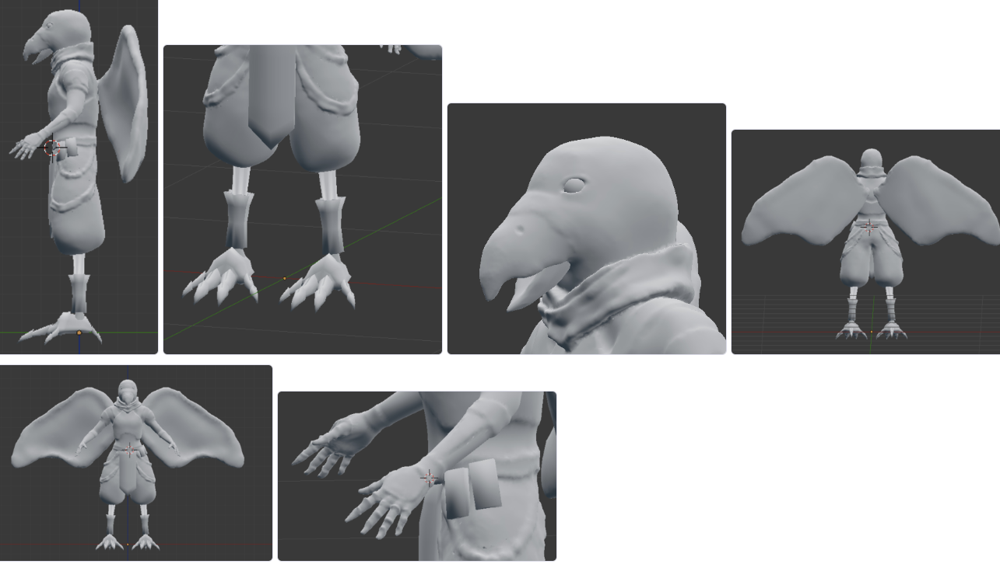
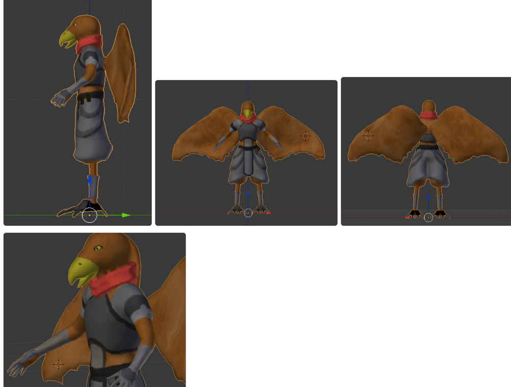
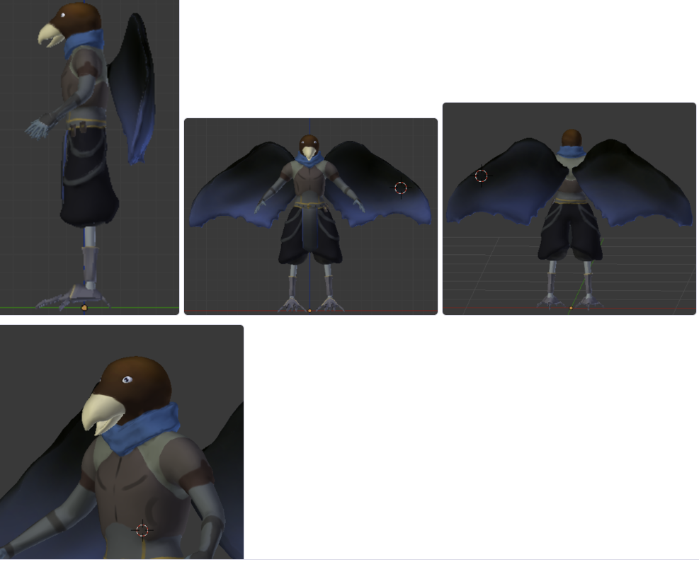
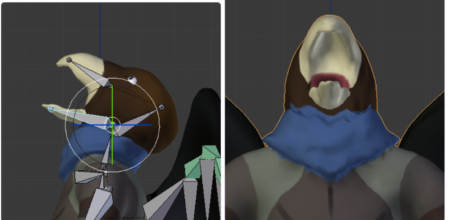

traPで制作されている『SkyHighFight』(2017春~)という3Dゲームの主要キャラの一体の『ファルコ・ローンディネ』です
キャラデザは他の人がやってくれました。
traPで制作されている『SkyHighFight』(2017春~)という3Dゲームの主要キャラの一体の『ファルコ・ローンディネ』です
キャラデザは他の人がやってくれました。
ちなみにそのゲームのキャラはこれ。この人がリーダーを務めるゲームのキャラを3Dにするのが今回のお仕事です。
ここに出てくるキャラ三体プラス一体を作る予定です。/p>
シグマくんに褒められて嬉しかったのでスマホ版作った pic.twitter.com/uyBOiNpDMK
— seadragon (@seadragon_traP) 2018年4月5日
スカルプトで、籠手の形状や、服のかんじを作った。
これをローポリ化してノーマルマップにベイク
色を加えた
ここで、違う色で塗るよう指示を受け、色を変更
ボーンを入れてアニメーションを入れた。特に、口の部分は鳥の骨格を参考にした。
